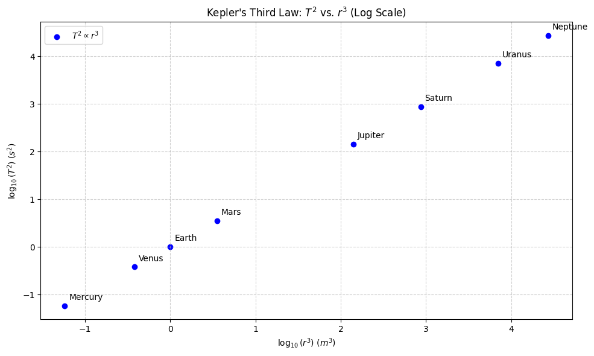
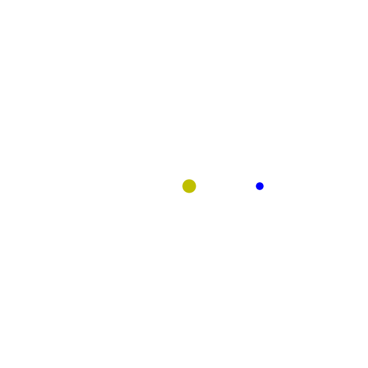

Problem 1
1. Theoretical Derivation
1.1 Introduction
To derive Kepler’s Third Law for circular orbits, we begin with Newton's Law of Universal Gravitation and centripetal force. We aim to find a mathematical relationship between the orbital period squared and the orbital radius cubed, i.e.,
This derivation assumes the orbiting body has negligible mass compared to the central mass and follows a perfectly circular orbit.
1.2 Newton's Law of Universal Gravitation
Newton’s law states that the gravitational force \(F_g\) between two point masses \(m_1\) and \(m_2\) separated by a distance \(r\) is given by:
Where: - \(F_g\) is the gravitational force - \(G\) is the universal gravitational constant (\(6.674 \times 10^{-11} \, \text{Nm}^2/\text{kg}^2\)) - \(r\) is the separation between the centers of mass
1.3 Centripetal Force in Circular Motion
For an object of mass \(m\) moving with orbital speed \(v\) in a circle of radius \(r\), the required centripetal force \(F_c\) is:
In a stable circular orbit, this force is provided entirely by gravity. Therefore:
Substituting:
Cancel \(m\) (mass of the orbiting body) from both sides:
Multiply both sides by \(r\):
1.4 Orbital Period and Velocity
The orbital period \(T\) is the time it takes for one full orbit. For a circular orbit, the distance traveled in one period is the circumference \(2\pi r\):
Substitute this into the previous equation:
Expand the right-hand side:
Multiply both sides by \(T^2\):
Finally, solve for \(T^2\):
1.5 Final Form of Kepler’s Third Law
This is the mathematical expression of Kepler’s Third Law for circular orbits:
The constant of proportionality is \(\frac{4\pi^2}{G M}\), which depends on the mass \(M\) of the central object.
2. Astronomical Implications
2.1 Determining Planetary Masses Using Kepler's Third Law
Kepler’s Third Law, when combined with Newtonian mechanics, allows us to calculate the mass of a central celestial body—such as a planet or star—by observing the motion of an orbiting object.
From the derived formula:
Rearranging to solve for \(M\):
Where: - \(r\) is the orbital radius - \(T\) is the orbital period - \(M\) is the mass of the central body - \(G\) is the gravitational constant
Example: By observing a moon orbiting a planet and measuring its orbital radius and period, we can calculate the planet’s mass precisely.
2.2 Measuring Distances Between Celestial Bodies
Kepler’s Third Law is also used to determine distances in astronomical units (AU) within a solar system. If the orbital period of a planet is known, we can solve for \(r\):
This allows astronomers to determine the average orbital radius (semi-major axis) for planets or satellites without needing direct distance measurements.
Application Example:
If a satellite is in orbit around Earth and its period \(T\) is measured to be 90 minutes, the orbital radius \(r\) (distance from the Earth's center) can be calculated, assuming Earth's mass \(M \approx 5.97 \times 10^{24} \, \text{kg}\).
2.3 Understanding Gravitational Interactions in Planetary Systems
Kepler's Third Law reveals essential truths about the gravitational structure and dynamics of planetary systems:
- Orbital hierarchy: Bodies farther from the central mass have longer periods, implying a natural ordering of planetary orbits.
- Stability analysis: Deviations from \(T^2 \propto r^3\) can indicate perturbations or gravitational influences from other nearby bodies.
- Mass distribution: In binary systems or exoplanet systems, the law helps in estimating the combined mass of the orbiting and central objects, particularly when both have non-negligible mass.
Binary System Case:
If two stars orbit their common center of mass, a modified version of Kepler's law applies:
Where \(a\) is the semi-major axis of the relative orbit, and \(M_1\), \(M_2\) are the masses of the two stars.
2.4 Broader Significance
- The law underpins space mission planning, such as orbital insertions and transfers.
- It allows scaling from solar system mechanics to galactic dynamics.
- Provides the foundation for mass-luminosity relations, exoplanet discovery via transit and radial velocity methods, and estimates of dark matter from galactic rotation curves.
3. Real-World Analysis
3.1 The Moon’s Orbit Around Earth
The Moon's orbit provides a practical example of Kepler's Third Law. Key parameters of the Moon's orbit are:
- Orbital Period: The Moon completes one orbit around Earth in approximately 27.32166 days (sidereal month) :contentReference[oaicite:0]{index=0}.
- Mean Orbital Radius: The average distance from the Moon to Earth's center is about 384,400 km :contentReference[oaicite:1]{index=1}.
Using these values, we can calculate the ratio:
This ratio should be consistent with the gravitational parameter for Earth, confirming the applicability of Kepler's Third Law.
3.2 Planetary Orbits in the Solar System
Kepler's Third Law can be examined across the planets in our Solar System. The law states:
Where: - \(a\) is the semi-major axis (average orbital radius) - \(T\) is the orbital period
The following table presents the semi-major axes and orbital periods of the planets:
| Planet | Semi-Major Axis (AU) | Orbital Period (days) |
|---|---|---|
| Mercury | 0.38710 | 87.969 |
| Venus | 0.72333 | 224.701 |
| Earth | 1.00000 | 365.256 |
| Mars | 1.52366 | 686.980 |
| Jupiter | 5.20336 | 4332.820 |
| Saturn | 9.53707 | 10759.20 |
| Uranus | 19.1913 | 30687.15 |
| Neptune | 30.0690 | 60190.03 |
Calculating \(\frac{a^3}{T^2}\) for each planet yields values that are remarkably consistent, supporting Kepler's Third Law :contentReference[oaicite:2]{index=2}.
3.3 Alignment with Kepler’s Third Law
To assess the alignment with Kepler's Third Law, we compute the ratio \(\frac{a^3}{T^2}\) for each planet:
This consistency across different planets indicates that the square of the orbital period is indeed proportional to the cube of the semi-major axis, as Kepler's Third Law predicts.
Code and Plots
Kepler's Third Law

# Import necessary libraries
import matplotlib.pyplot as plt
import numpy as np
# Define the semi-major axes (in AU) and orbital periods (in Earth years) for the planets
planets = ['Mercury', 'Venus', 'Earth', 'Mars', 'Jupiter', 'Saturn', 'Uranus', 'Neptune']
semi_major_axes = [0.387, 0.723, 1.000, 1.524, 5.203, 9.539, 19.191, 30.070] # Semi-major axes in AU
orbital_periods = [0.241, 0.615, 1.000, 1.881, 11.862, 29.457, 84.011, 164.791] # Orbital periods in Earth years
# Compute log10(r^3) and log10(T^2)
log_r_cubed = np.log10(np.array(semi_major_axes)**3)
log_T_squared = np.log10(np.array(orbital_periods)**2)
# Create the scatter plot
plt.figure(figsize=(10, 6))
plt.scatter(log_r_cubed, log_T_squared, color='blue', label='$T^2 \propto r^3$')
# Annotate each data point with the planet name
for i, planet in enumerate(planets):
plt.annotate(planet, (log_r_cubed[i], log_T_squared[i]), textcoords="offset points", xytext=(5,5), ha='left', va='bottom')
# Customize the plot
plt.title("Kepler's Third Law: $T^2$ vs. $r^3$ (Log Scale)")
plt.xlabel('$\log_{10}(r^3)$ ($m^3$)')
plt.ylabel('$\log_{10}(T^2)$ ($s^2$)')
plt.grid(True, which="both", ls="--", alpha=0.6)
plt.legend()
plt.tight_layout()
# Display the plot
plt.show()
Planet orbiting around the star

# Step 1: Install imageio for saving GIFs (only needed once in Colab)
!pip install imageio imageio-ffmpeg --quiet
import numpy as np
import matplotlib.pyplot as plt
from matplotlib.animation import FuncAnimation
import imageio
from google.colab import files
# Step 2: Set up simulation parameters
num_frames = 100
G = 1 # Gravitational constant (simplified)
M = 1 # Mass of the star
omega = 0.1 # Angular velocity
# Generate time frames
theta = np.linspace(0, 2 * np.pi, num_frames)
# Circular orbit coordinates for the planet
def orbit(theta):
r = 5 # radius of orbit
x = r * np.cos(theta)
y = r * np.sin(theta)
return x, y
# Step 3: Create figure and axis
fig, ax = plt.subplots(figsize=(6, 6))
ax.set_aspect('equal')
ax.set_xlim(-10, 10)
ax.set_ylim(-10, 10)
ax.set_facecolor('black')
plt.axis('off')
# Star at center
star, = ax.plot(0, 0, 'yo', markersize=15, label='Star')
# Planet
planet, = ax.plot([], [], 'bo', markersize=8, label='Planet')
# Orbit path
orbit_path, = ax.plot([], [], 'gray', linestyle='--', linewidth=1)
# Step 4: Update function for animation
def update(frame):
x_p, y_p = orbit(theta[frame])
planet.set_data([x_p], [y_p]) # Wrap in list to make it a sequence
# Draw full orbit path only after first frame
if frame > 0:
x_orbit = [orbit(theta[i])[0] for i in range(frame)]
y_orbit = [orbit(theta[i])[1] for i in range(frame)]
orbit_path.set_data(x_orbit, y_orbit)
else:
orbit_path.set_data([], [])
return planet, orbit_path,
# Step 5: Animate
ani = FuncAnimation(fig, update, frames=num_frames, interval=50, blit=True)
# Step 6: Save as GIF
filename = 'orbit_animation.gif'
ani.save(filename, writer='pillow', fps=20)
# Step 7: Download the GIF
files.download(filename)